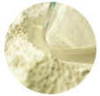
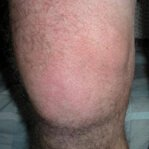
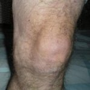
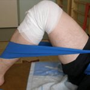
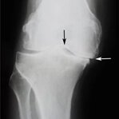
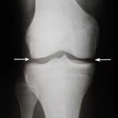

¡El bálsamo que te hará moverte en 1 mes!
- Cura en lugar de enmascarar el dolor
- Aplicación especial
- Eficaz en casos severos
- Recupera la movilidad de las articulaciones
Nuestra misión es hacer que todos se muevan libremente.
Yooku Boateng, director del centro de rehabilitación de enfermedades del sistema músculoesquelético
Pocos saben que el desarrollo de Enerflex tomó mucho tiempo. Mi equipo y yo estudiamos cientos de extractos de plantas de diferentes partes del mundo y finalmente logramos sintetizar la fórmula ideal a partir de la cual apareció el bálsamo Enerflex.
No es solo un analgésico que funciona en la superficie. Los componentes del bálsamo penetran profundamente en los tejidos, los unen y los fortalecen restaurando la elasticidad. He desarrollado una técnica especial para aplicar el bálsamo Enerflex. No hay nada igual, ni siquiera en Europa. Si sigues mis recomendaciones, podrás moverte libremente.
¿Te suenan estos síntomas?

Dolor y sensación de pesadez en la columna
Las articulaciones estallan al caminar
Hinchazón de las extremidades Dolor en los dedos
Limitaciones al moverte
Dolor cuando giras la cabeza o el torso
Esto indica que tienes problemas articulares.
¿Qué causa las enfermedades
del sistema musculoesquelético?
Mucha gente piensa que la enfermedad articular está asociada a los cambios relacionados con la edad o a los trastornos genéticos, pero no es así. Estas son las principales causas de enfermedades del sistema del músculoesquelético.

- Alergia
Reacciones alérgicas que provocan inflamación en el cuerpo y contribuyen al desarrollo de enfermedades articulares
- Virus
Algunos virus circulan por la sangre y se depositan en los vasos sanguíneos. Penetran en las membranas de la articulación y provocan síntomas desagradables
- Enfermedades del sistema nervioso
Las disfunciones del sistema nervioso interrumpen la nutrición de los músculos, los huesos y el tono vascular, lo que conduce al agotamiento de las articulaciones
- Enfermedades
de los vasos sanguíneosLa circulación sanguínea alterada en los vasos sanguíneos provoca procesos inflamatorios en las articulaciones y los huesos
- Enfermedades del sistema endocrino
Muchas enfermedades articulares son causadas por trastornos hormonales en el organismo
Las causas de la enfermedad pueden ser muchas, pero la solución es una:
Enerflex
No agregamos sustancias químicas agresivas ni alérgenos fuertes. El 90% de los componentes son extractos naturales. Estos se complementan entre sí y tienen una influencia positiva sobre el origen de la enfermedad.
Extracto de árnica Alivia la inflamación y la hinchazón
Extracto de pimiento Elimina las sales
- 
Salicilato de metilo Acelera la regeneración de los tejidos
Alcanfor Alivia el dolor
01 Cómo aplicar Enerflex:
3 reglas importantes
Aplica el bálsamo solo en reposo
Para que Enerflex funcione rápidamente, debes aplicarlo en las áreas afectadas mientras descansas.
Aplica el bálsamo por la mañana inmediatamente después de despertarte. Después de aplicarlo, acuéstate durante 20-30 minutos hasta que el bálsamo se absorba por completo.
Aplica el bálsamo por la noche inmediatamente después de cenar. Después de aplicarlo, no te levantes para que los músculos y las articulaciones permanezcan inactivos.
02 ¡No lo frotes!
Para no dañar más la piel y las articulaciones, no es necesario frotar con fuerza el bálsamo. Simplemente aplícalo con movimientos ligeros.
03 Agrega ejercicios ligeros
¡No tienes que pasarte! Basta con hacer ejercicios durante 10-15 minutos al día para acelerar el tiempo de recuperación.
Acuéstate en el suelo, dobla la pierna a la altura de la rodilla, sujétala con las manos y presiónela firmemente contra el estómago. Permanece en esa posición durante 30 segundos y luego cambia de pierna.
Piernas rectas. Toca tus pies con las manos y permanece en esa posición durante unos 30 segundos.
Apóyate sobre los codos, levanta el cuerpo y levanta lentamente las piernas. Luego mantenlas en esa posición durante unos 30 segundos.
Resultado garantizado
después de la primera aplicación
Primera aplicación
 Antes Después- el dolor se va
- la inflamación disminuye
- el enrojecimiento desaparece
1 semana
 AntesDespués- el dolor desaparece al caminar y levantar objetos pesados
- la piel recupera su color saludable
- los tejidos se vuelven más elásticos
1 mes
 Antes Después- la movilidad articular se restaura por completo
- las paredes vasculares se fortalecen
- el resultado dura mucho tiempo